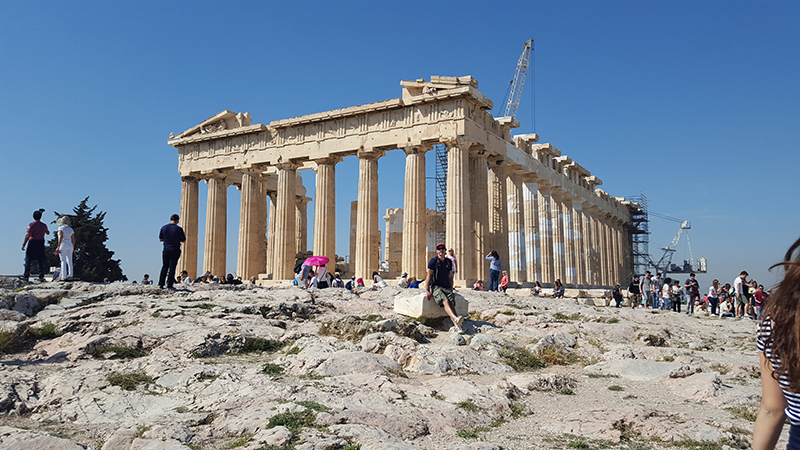

Agia Triada
There are many monasteries on Crete, and none more beautiful and peaceful than Agia Triada. There were lovely gardens throughout, and it was quiet and calm, with few tourists around.

Parthenon
The Parthenon is one of the most famous sights around the world. Despite having seen it thousands of times in pictures, it still stuns when you first see it in person.
Of course, the thousands of tourists getting in the way can be a little frustrating!

Temple of Olympian Zeus, Athens
The Temple of Olympian Zeus towers above you, yet is still dwarved by the Parthenon sitting atop the Acropolis in the backgrounds.